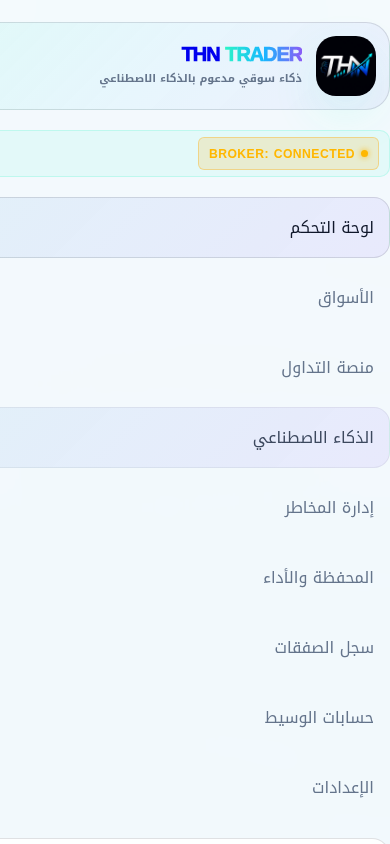
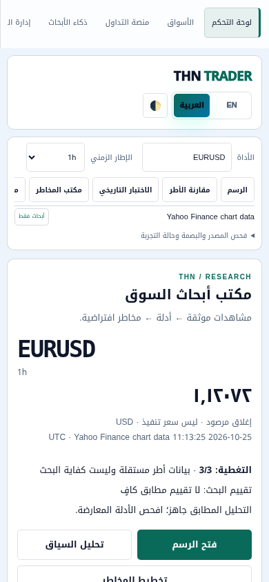
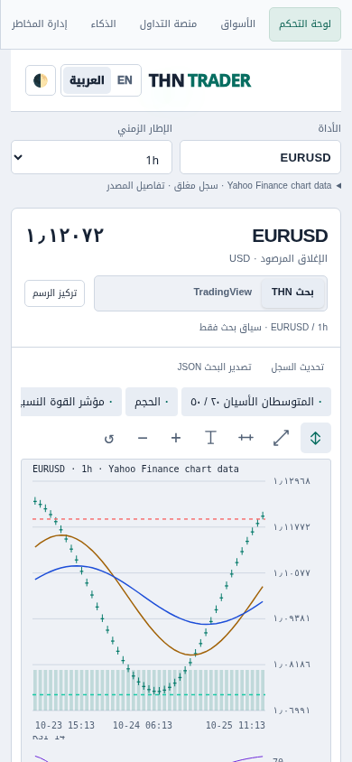

Matched 390 × 844 browser viewports / light. Application images are original captures. Click an image for native size. Local regression fixtures; historical frontend has no connected broker or verified feed.


